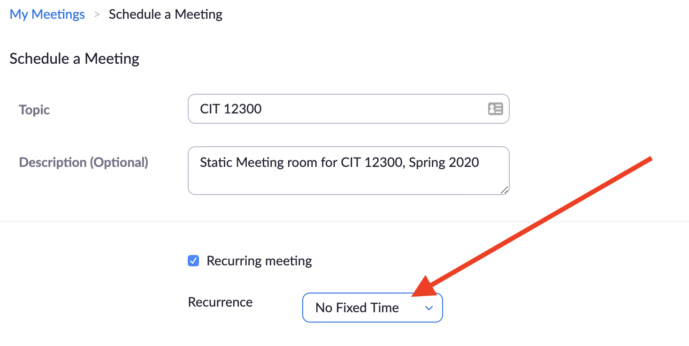
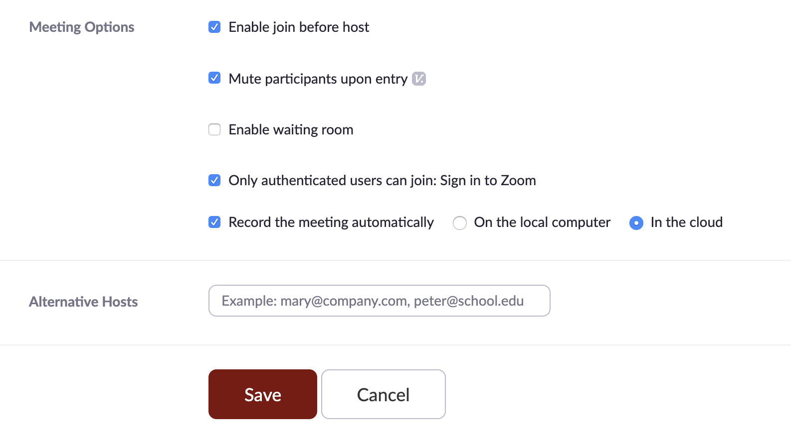
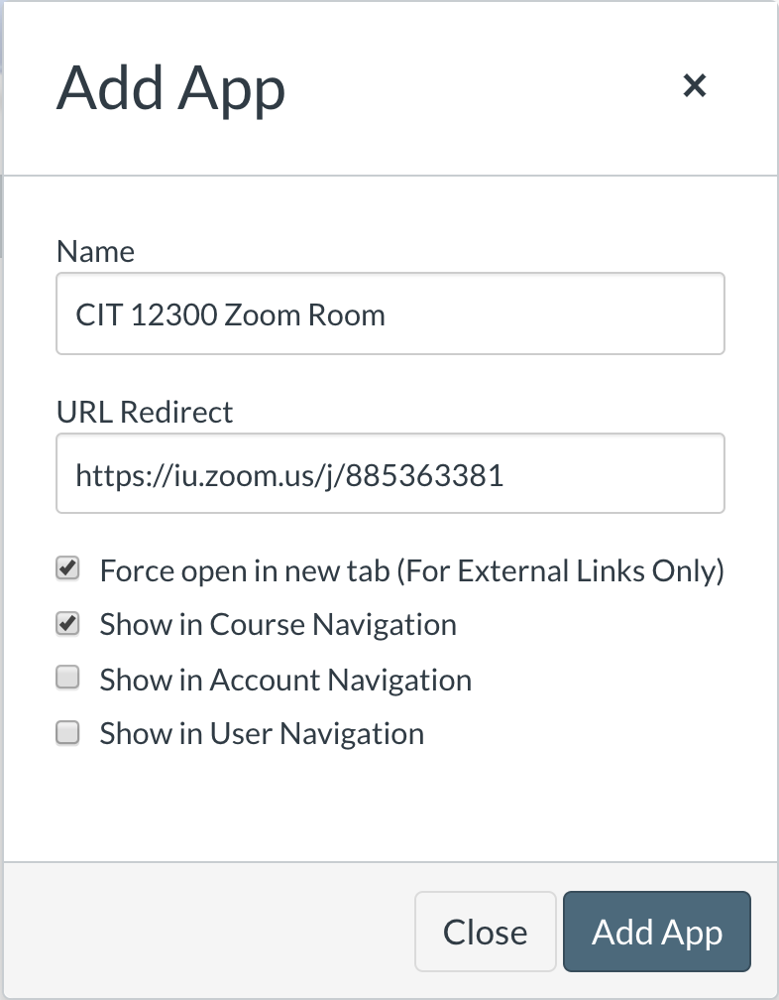

This Codelab will walk you through the process of creating a recurring Zoom room with a static link that you can add to your Canvas course navigation.
Why Do This?
Students are juggling multiple online courses and instructors have extremely different communication methods.
Courses that meet more than once using Zoom can benefit from keeping a single Zoom link available to students for the entire semester. This minimizes confusion for students, and avoids overlap if an instructor is teaching more than one course.
Go to https://zoom.iu.edu and log in. If this is your first time logging in, an account will be created for you.
Choose the Schedule a Meeting link.
Set the Schedule
Provide a Topic and Description for the room
Check the Recurring meeting option
Choose the No Fixed Time option (Zoom scheduling does not allow for Monday/Wednesday scheduling at this time; The "No Fixed Time" option means that the room will be active anytime a host (the meeting creator or an alternate host) is in the room)

Set the Meeting Options
These meeting options are suggested, but should improve the experience of using Zoom for instruction.
Choose the following:
Enable join before host (this allows students to show up early)
Mute participants upon entry (this minimizes chaos at startup)
Only authenticated users can join: Sign in to Zoom (All IU students have a Zoom account automatically by signing into https://zoom.iu.edu with their IU credentials.)
Record the meeting automatically (Recording "In the cloud" will automatically place your recorded class session in your My Media in Kaltura; You can then add these to your Media Gallery in Canvas so students can review.)

Alternative Hosts
You may designate an Alternative Host if desired. This might be a co-instructor or teaching assistant, for example.
Save the Room
Once your options are set, click the Save button.
From the overview page, find the URL for the meeting you just created and copy it.
Now that you have a static link to your Zoom room, you can add it as a Navigation Item in your Canvas course.
Proceed to your Canvas course:
Click Settings
Click the Apps tab
Search for the Redirect Tool (The icon for the tool does not contain text; it is a blue, curved arrow.)
Choose +Add App
Create your Navigation Link
In the dialog box that appears, do the following:
The Name field is what the navigation link will be named
Paste the copied link to the Zoom room in the URL Redirect field
Click the Force open in new tab option (This will launch a new browser window for the Zoom room, which will load the Zoom application.)
Click the Show in Course Navigation option (This adds the link to your Canvas course navigation.)
Click Add App

Once the link to the Zoom room appears in your navigation, you can reorder it to appear in your preferred location. The link to the room now functions like any other Canvas tool.
Update Your Navigation
In your Canvas course, do the following:
Click Settings
Click the Navigation tab
Drag the Zoom room link to the desired position in the list
Scroll all the way to the bottom of the Navigation page and click Save
Your navigation will automatically refresh and you will see the link in the Navigation.